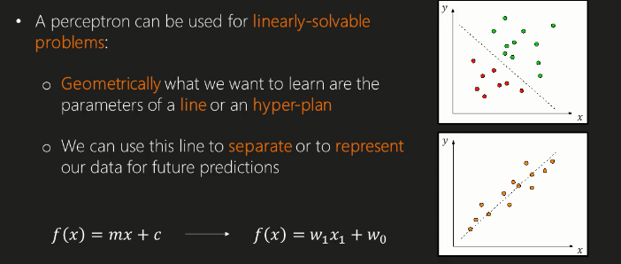
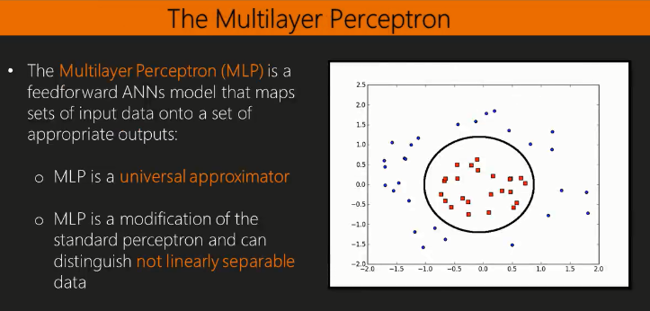
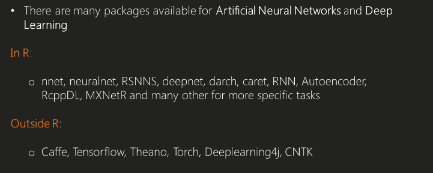

Intro concepts deep learning
Jose Parreno Garcia
March 2018
library(knitr)In this blog we are going to talk about
- Fundamental concepts in deep learning
- Introduction to artificial neural networks
- Classification with 2-layers of ANNs
- Probabilistic predictions with a 2-layer ANN
1 Fundamental concepts in deep learning
1.1 Why is deep learning important nowadays
Deep learning is a new approach to improving what was the state-of-the-art machine learning techniques for very complicated tasks, like image recognition, speed recognition, natural language processing, etc. Real world examples are:
- Netflix uses deep learning on its recommendation engine to suggest you what to watch next.
- Amazon uses it too.
- Helps with google image searches
- Tackles fraud detection much better
One of the things that deep learning tackles really well (like some specific machine learning algorithms) is handling directly the raw data. As an example, when using linear models you always have to be careful with scaling the variables to make sure none have an overweight just because their values are bigger than others. It can also handle missing data effectively.
Obviously, these improvements come at a cost, which currently can be split in 2: expensive computation power required and a certain degree of knowledge to tweak the model parameters. Nowdays, unless you want to work with a super simple laptop, all companies will have the ability to tackle the first problem, either by buying commodity software or renting cloud computational power. The knowledge gap is something anyone can learn online and by playing around, but as always, it required time investment.
1.2 Deep learning definition and key features
Check the image below:

In this graph we can see 3 different approaches to tackle predictive modelling (fromm input to output):
- The classical machine learning has a specific layer of designing features that the model will use. The design can be manually deciding what variables we need to add to the model to creating different variables with pre-processing steps or changing distribution of the variables.
- The representational learning approach is similar to the classical machine learning approach with the added value difference that the reduction of the features that are used in the model is learnt directly from the data. There is very little or no intervention from the modeller in this stage.
- The deep learning approach is then different to representation learning mainly in the mapping layer. So, in representational learning, you could get to the model and understsand what effect does a variable have in the final output, but in deep learning, the system is creating layers of more abstract features with weightings that can be very difficult to understand in the final output when analysed on their own.
Taking the last point above about having multiple layers of abstract features derived from a much simple set of input features, lets check the typical image recognition example. As you can see in the image below, this deep learning method has created 5 layers (1 input, 3 intermediate and 1 output layer).
- The input layer is based on all the raw images
- The first intermediate layer is pretty much impossible to understand on its own. What the hell is the layer representing with the calculations it is doing??
- The second intermediate layers then builds up from the previous and it can now start grouping stuff together. This layer is a bit more recognisable as you can see how the model is now able to capture different types of eyes, mouths, noses.
- The third intermediate layer is obviously close to what we want to predict, and it can use the suttle difference in parts of a face to create new faces
- Finally, the output layer will then classify faces or try to rebuild the image as throughly as possible.
- As you have seen, the deep learning method is a hierarchical method, where lower layers represent very simple patterns and then start building from there to capture partial patterns to a point where the pattern recognition is complete.
1.3 How to automatically learn from data
The previous example was a very specific and tailored one, and the good thing about this problem is that you can actually see what the layers are starting to infer at each point. However, is the problem at hand didnt have to do with images, then it would be very difficult to understand what is happening in those layers, as you would pretty much see numbers (pretty much impossible to make sense of). So, it is key to understand how deep learning learns data to trust that what it’s doing is fine.
The deep learning model doesnt really differ much in terms of how is learns data at a high level with how other machine learning algorithms work. Firstly, there is a loss function (that can be a certain type of error) and what the model will try to do is combine the data to try to minimize this error as much as possible. Given that this loss function is a general function, you can apply it to classification by, for example, defining the loss function as the accuracy/specificity/more complex KPIs, or you can apply it to regression and try to minimise RMSE/MSE/etc.
To make this concept clear, here is an example of loss function applied to regression model (loss function is the MSE - mean square error):
2 Introduction to artificial neural networks
2.1 The vast world of ANNs
ANNs can be framed in 2 main categories:
- Feed-forward - where layers of neurons are only connected on a down stream pattern
- Recursive - where layers can also be connected backwards and create cycles.
2.2 The perceptron algorithm
The perceptron is the fundamental computational unit at the heart of every deep learning model and it actually inspired by a real biological neuron (one of the many we have in our body!).
It is a supervised learning algorithm to output binary classification. Lets follow the path in the square box:
- Initially, we have different input values \(x\) and a bias term (imagine it as an intercept term) which is always equal 1.
- Those terms get assigned weights \(w\)
- Combining both with a linear model \(w_0 + w*x\), we can get different values and depending on the values we can classify them as either 1 or 0. This is the net input function.
- Eventually, we can apply an activation function to give the results a bit more of a smooth behaviour. FOr example, this activation function can be the sigmoid function (shown in the lower right).
The hardest problem we are ommitting here is actually how to learn those weights \(w\)??. This will be looked at in following sections/posts
2.2.1 Perceptron geometric interpretation
As an example of a linear proble, the perceptron can be interpreted as the way to pick those parameters that fit the best line (if its 2D) or a hyperplane (if its 3D or more dimensiones). Using the notation above, for a simple 2D linear problem, we will have 1 bias term neuron \(w_0\) and 1 input neuron \(w_1\).

2.3 The multilayer perceptron
As you can imagine, the multilayer perceptron algorithm is a method whereby we have more than 1 layer using perceptron units (like the ones above). It is a feedforward ANN and by having more neuron layers, it is able to pick relationships that are not necessarily linear. In the image below, a MLP will be able to pick the classification distinction which is represented by a non-linear line (a circle in this case).

So, lets look at an example of how the MLP works:
- Starting at the left of the diagram, we have 3 input variables (3 input neurons).
- We can add extra layers of neurons all connected to the same initial 3 neurons, and then add extra perceptrons that take the input of thay bigger 5 neuron layer.
- The MLP can be also seen as a simple Matrix Vector multiplication:
- We have our input data \(x_{(3,1)}\)
- We have the matrix of weights, where each neuron will have a weight for each of the different input neurons. This is why is looks like a 5x3 matrix; 5 being the number of neurons in the hidden layer and 3 being the number of neuron in the input layer.
- We then multiply both matrices and we get the matrix for the hidden layer \(h_{(5,1)}\)
- We then have the second stage layer, where the hidden layer becomes the input layer and the ouput layer receives the information from this 5 neuron layer.
- This means that then we have a vector of 5x1, representing the 5 inputs of the 5 neurons in the hidden layer
- Then we have \(w_0\), which is a 2x5 matrix; 2 representing the number of neurons in the output layer and 5 representing the weights it will give to each of the input neurons.
- We repreat the matrix multiplication and end with an output layer of matrix \(o_{(2,1)}\)
2.4 Packages for ANNs

3 Classification with 2-layers of ANNs
In this section we will learn how to build our first two-layers neural networks (Multi Layer Perceptron) using caret and nnet. We will train our neural network to recognize hanwritten digits. Lets start by downloading the data:
For our model, we can choose to use the MLP architecture. We have 784 input neurons, we can reduce those mapped to 5 hidden neurons, and the go back again to 10 output neurons, which represents the different classes in the dataset. Basically, what we are saying is that the only thing that we can change is:
- Either add more hidden layers
- Either add more/less neurons in the hidden layer
- But we cant definitely change the number of input neurons, as that is the number of records in the data we are going to use, and we cant change the number of output neurons, because that is the number of different classes we want to classify.
library(nnet)
library(caret)
options(digits=3)
set.seed(1234)
digits.data <- read.csv("train.csv")Let’s see how the data are structured:
dim(digits.data)## [1] 42000 785# 42k images
# 785 columns - the first is the label (the number), the rest is the pixel
head(colnames(digits.data), 4)## [1] "label" "pixel0" "pixel1" "pixel2"tail(colnames(digits.data), 4)## [1] "pixel780" "pixel781" "pixel782" "pixel783"head(digits.data[1:2, 1:4])## label pixel0 pixel1 pixel2
## 1 1 0 0 0
## 2 0 0 0 0Let us convert the labels into factor and visualize their distribution. We use only the first 5000 images for training and the rest for testing purpose.
digits.data$label <- factor(digits.data$label, levels = 0:9)
i <- 1:5000
digits.X <- digits.data[i, -1]
digits.y <- digits.data[i, 1]Now we can train our MLP with the caret wrapper:
digits.m1 <- train(x = digits.X, y = digits.y,
method = "nnet"
, tuneGrid = expand.grid(
.size = c(5) # SPECIFY HIDDEN NEURONS
, .decay = 0.1)
, trControl = trainControl(method = "none", seeds = 123)
, MaxNWts = 10000
, maxit = 100
)## # weights: 3985
## initial value 13931.009387
## iter 10 value 10822.823757
## iter 20 value 9285.729951
## iter 30 value 9107.339298
## iter 40 value 8831.708292
## iter 50 value 8584.573515
## iter 60 value 8519.046528
## iter 70 value 8268.134068
## iter 80 value 8046.144291
## iter 90 value 7961.550471
## iter 100 value 7900.047441
## final value 7900.047441
## stopped after 100 iterationsLet’s how accurate is this model on the training set
digits.yhat1 <- predict(digits.m1)
caret::confusionMatrix(xtabs(~digits.yhat1 + digits.y))## Confusion Matrix and Statistics
##
## digits.y
## digits.yhat1 0 1 2 3 4 5 6 7 8 9
## 0 179 2 1 0 0 71 1 1 27 2
## 1 4 432 22 10 9 49 1 32 67 55
## 2 27 3 265 11 16 8 32 23 4 10
## 3 13 113 96 420 0 130 7 10 194 17
## 4 0 0 0 0 0 0 0 0 0 0
## 5 89 6 24 33 0 138 6 0 125 1
## 6 175 1 99 1 148 68 440 16 36 15
## 7 7 1 38 5 304 5 29 424 24 378
## 8 0 0 0 0 0 0 0 0 0 0
## 9 0 0 0 0 0 0 0 0 0 0
##
## Overall Statistics
##
## Accuracy : 0.46
## 95% CI : (0.446, 0.474)
## No Information Rate : 0.112
## P-Value [Acc > NIR] : <2e-16
##
## Kappa : 0.398
## Mcnemar's Test P-Value : NA
##
## Statistics by Class:
##
## Class: 0 Class: 1 Class: 2 Class: 3 Class: 4 Class: 5 Class: 6 Class: 7 Class: 8 Class: 9
## Sensitivity 0.3623 0.7742 0.4862 0.875 0.0000 0.2942 0.853 0.8379 0.0000 0.0000
## Specificity 0.9767 0.9439 0.9699 0.872 1.0000 0.9373 0.875 0.8240 1.0000 1.0000
## Pos Pred Value 0.6303 0.6344 0.6642 0.420 NaN 0.3270 0.440 0.3490 NaN NaN
## Neg Pred Value 0.9332 0.9708 0.9391 0.985 0.9046 0.9277 0.981 0.9783 0.9046 0.9044
## Prevalence 0.0988 0.1116 0.1090 0.096 0.0954 0.0938 0.103 0.1012 0.0954 0.0956
## Detection Rate 0.0358 0.0864 0.0530 0.084 0.0000 0.0276 0.088 0.0848 0.0000 0.0000
## Detection Prevalence 0.0568 0.1362 0.0798 0.200 0.0000 0.0844 0.200 0.2430 0.0000 0.0000
## Balanced Accuracy 0.6695 0.8591 0.7281 0.873 0.5000 0.6158 0.864 0.8310 0.5000 0.50003.0.1 Increasing/decreasing max iterations for the model
Compare with the values above.
Summary:
- More iter -> more train accuracy
- Less iter -> less train accuracy
digits.m1 <- train(x = digits.X, y = digits.y,
method = "nnet"
, tuneGrid = expand.grid(
.size = c(5) # SPECIFY HIDDEN NEURONS
, .decay = 0.1)
, trControl = trainControl(method = "none", seeds = 123)
, MaxNWts = 10000
, maxit = 50
)## # weights: 3985
## initial value 13931.009387
## iter 10 value 10822.823757
## iter 20 value 9285.729951
## iter 30 value 9107.339298
## iter 40 value 8831.708292
## iter 50 value 8584.573515
## final value 8584.573515
## stopped after 50 iterationsdigits.yhat1 <- predict(digits.m1)
caret::confusionMatrix(xtabs(~digits.yhat1 + digits.y))## Confusion Matrix and Statistics
##
## digits.y
## digits.yhat1 0 1 2 3 4 5 6 7 8 9
## 0 357 10 45 66 0 227 3 1 196 3
## 1 4 452 28 10 6 48 1 218 65 64
## 2 17 4 229 53 13 8 31 12 12 6
## 3 8 82 67 320 0 70 1 5 86 9
## 4 0 0 0 0 1 0 0 0 0 0
## 5 0 0 0 0 0 0 0 0 0 0
## 6 102 3 136 27 223 108 474 28 97 32
## 7 0 0 0 0 0 0 0 0 0 0
## 8 0 0 0 0 0 0 0 0 0 0
## 9 6 7 40 4 234 8 6 242 21 364
##
## Overall Statistics
##
## Accuracy : 0.439
## 95% CI : (0.426, 0.453)
## No Information Rate : 0.112
## P-Value [Acc > NIR] : <2e-16
##
## Kappa : 0.376
## Mcnemar's Test P-Value : NA
##
## Statistics by Class:
##
## Class: 0 Class: 1 Class: 2 Class: 3 Class: 4 Class: 5 Class: 6 Class: 7 Class: 8 Class: 9
## Sensitivity 0.7227 0.8100 0.4202 0.667 0.0021 0.0000 0.9186 0.000 0.0000 0.7615
## Specificity 0.8777 0.9000 0.9650 0.927 1.0000 1.0000 0.8314 1.000 1.0000 0.8744
## Pos Pred Value 0.3932 0.5045 0.5948 0.494 1.0000 NaN 0.3854 NaN NaN 0.3906
## Neg Pred Value 0.9665 0.9742 0.9315 0.963 0.9048 0.9062 0.9889 0.899 0.9046 0.9720
## Prevalence 0.0988 0.1116 0.1090 0.096 0.0954 0.0938 0.1032 0.101 0.0954 0.0956
## Detection Rate 0.0714 0.0904 0.0458 0.064 0.0002 0.0000 0.0948 0.000 0.0000 0.0728
## Detection Prevalence 0.1816 0.1792 0.0770 0.130 0.0002 0.0000 0.2460 0.000 0.0000 0.1864
## Balanced Accuracy 0.8002 0.8550 0.6926 0.797 0.5010 0.5000 0.8750 0.500 0.5000 0.8179digits.m1 <- train(x = digits.X, y = digits.y,
method = "nnet"
, tuneGrid = expand.grid(
.size = c(5) # SPECIFY HIDDEN NEURONS
, .decay = 0.1)
, trControl = trainControl(method = "none", seeds = 123)
, MaxNWts = 10000
, maxit = 500
)## # weights: 3985
## initial value 13931.009387
## iter 10 value 10822.823757
## iter 20 value 9285.729951
## iter 30 value 9107.339298
## iter 40 value 8831.708292
## iter 50 value 8584.573515
## iter 60 value 8519.046528
## iter 70 value 8268.134068
## iter 80 value 8046.144291
## iter 90 value 7961.550471
## iter 100 value 7900.047441
## iter 110 value 7837.397142
## iter 120 value 7795.716248
## iter 130 value 7609.922992
## iter 140 value 7574.203658
## iter 150 value 7552.128153
## iter 160 value 7490.120161
## iter 170 value 7482.996390
## iter 180 value 7467.257662
## iter 190 value 7442.731164
## iter 200 value 7402.624549
## iter 210 value 7389.522209
## iter 220 value 7374.254208
## iter 230 value 7357.022723
## iter 240 value 7348.004900
## iter 250 value 7331.115357
## iter 260 value 7318.086814
## iter 270 value 7303.424703
## iter 280 value 7294.814881
## iter 290 value 7288.508480
## iter 300 value 7282.013956
## iter 310 value 7275.000871
## iter 320 value 7270.376270
## iter 330 value 7266.598260
## iter 340 value 7265.009177
## iter 350 value 7252.335084
## iter 360 value 7215.356635
## iter 370 value 7169.984897
## iter 380 value 7125.986377
## iter 390 value 7112.456460
## iter 400 value 7092.116051
## iter 410 value 7085.469267
## iter 420 value 7083.597417
## iter 430 value 7077.363494
## iter 440 value 7022.282271
## iter 450 value 7011.692812
## iter 460 value 6991.302044
## iter 470 value 6983.934843
## iter 480 value 6978.246631
## iter 490 value 6956.815634
## iter 500 value 6944.129051
## final value 6944.129051
## stopped after 500 iterationsdigits.yhat1 <- predict(digits.m1)
caret::confusionMatrix(xtabs(~digits.yhat1 + digits.y))## Confusion Matrix and Statistics
##
## digits.y
## digits.yhat1 0 1 2 3 4 5 6 7 8 9
## 0 261 11 6 4 3 133 4 7 74 5
## 1 0 424 16 7 4 19 1 14 30 47
## 2 14 1 321 8 19 12 122 24 6 10
## 3 11 107 67 402 1 50 3 8 62 16
## 4 1 0 0 0 0 0 0 0 0 0
## 5 0 0 0 0 0 0 0 0 0 0
## 6 43 1 37 2 216 24 346 21 24 27
## 7 1 0 32 2 234 0 2 431 12 372
## 8 163 14 66 55 0 231 38 1 269 1
## 9 0 0 0 0 0 0 0 0 0 0
##
## Overall Statistics
##
## Accuracy : 0.491
## 95% CI : (0.477, 0.505)
## No Information Rate : 0.112
## P-Value [Acc > NIR] : <2e-16
##
## Kappa : 0.433
## Mcnemar's Test P-Value : NA
##
## Statistics by Class:
##
## Class: 0 Class: 1 Class: 2 Class: 3 Class: 4 Class: 5 Class: 6 Class: 7 Class: 8 Class: 9
## Sensitivity 0.5283 0.7599 0.5890 0.8375 0.0000 0.0000 0.6705 0.8518 0.5639 0.0000
## Specificity 0.9452 0.9689 0.9515 0.9281 0.9998 1.0000 0.9119 0.8543 0.8742 1.0000
## Pos Pred Value 0.5138 0.7544 0.5978 0.5530 0.0000 NaN 0.4669 0.3969 0.3210 NaN
## Neg Pred Value 0.9481 0.9698 0.9498 0.9817 0.9046 0.9062 0.9601 0.9808 0.9500 0.9044
## Prevalence 0.0988 0.1116 0.1090 0.0960 0.0954 0.0938 0.1032 0.1012 0.0954 0.0956
## Detection Rate 0.0522 0.0848 0.0642 0.0804 0.0000 0.0000 0.0692 0.0862 0.0538 0.0000
## Detection Prevalence 0.1016 0.1124 0.1074 0.1454 0.0002 0.0000 0.1482 0.2172 0.1676 0.0000
## Balanced Accuracy 0.7368 0.8644 0.7703 0.8828 0.4999 0.5000 0.7912 0.8530 0.7191 0.50004 Probabilistic predictions with a 2-layer ANN
In this section we will learn how to extract probabilist predictions out of our first two-layers neural networks (Multi Layer Perceptron) using caret and nnet. In the previous section, the output of was based on the maximum value of the output neurons to decide which class to pick, but we might be interested in getting the probabilistic values and we can decide what to do with them.
Let’s recover the predictions we implemented in the previous section. We very clearly see how some classes are being classified in vast majority, and that doesn’t really correspond to the real distribution of classes
digits.yhat1 <- predict(digits.m1)
barplot(table(digits.y))barplot(table(digits.yhat1))caret::confusionMatrix(xtabs(~digits.yhat1 + digits.y))## Confusion Matrix and Statistics
##
## digits.y
## digits.yhat1 0 1 2 3 4 5 6 7 8 9
## 0 419 0 16 34 1 114 42 7 14 14
## 1 0 510 5 1 1 9 5 6 10 2
## 2 15 0 307 17 1 16 23 6 25 3
## 3 45 6 110 366 0 155 2 1 43 4
## 4 3 0 30 4 308 8 51 26 14 76
## 5 6 27 7 8 1 107 38 3 39 0
## 6 0 0 37 2 2 4 351 2 1 1
## 7 1 1 8 19 5 2 0 388 4 34
## 8 4 12 14 21 14 48 2 8 321 11
## 9 1 2 11 8 144 6 2 59 6 333
##
## Overall Statistics
##
## Accuracy : 0.682
## 95% CI : (0.669, 0.695)
## No Information Rate : 0.112
## P-Value [Acc > NIR] : <2e-16
##
## Kappa : 0.647
## Mcnemar's Test P-Value : NA
##
## Statistics by Class:
##
## Class: 0 Class: 1 Class: 2 Class: 3 Class: 4 Class: 5 Class: 6 Class: 7 Class: 8 Class: 9
## Sensitivity 0.8482 0.914 0.5633 0.7625 0.6457 0.2281 0.6802 0.7668 0.6730 0.6967
## Specificity 0.9463 0.991 0.9762 0.9190 0.9531 0.9715 0.9891 0.9835 0.9704 0.9471
## Pos Pred Value 0.6339 0.929 0.7433 0.5000 0.5923 0.4534 0.8775 0.8398 0.7055 0.5822
## Neg Pred Value 0.9827 0.989 0.9481 0.9733 0.9623 0.9240 0.9641 0.9740 0.9657 0.9673
## Prevalence 0.0988 0.112 0.1090 0.0960 0.0954 0.0938 0.1032 0.1012 0.0954 0.0956
## Detection Rate 0.0838 0.102 0.0614 0.0732 0.0616 0.0214 0.0702 0.0776 0.0642 0.0666
## Detection Prevalence 0.1322 0.110 0.0826 0.1464 0.1040 0.0472 0.0800 0.0924 0.0910 0.1144
## Balanced Accuracy 0.8972 0.953 0.7698 0.8408 0.7994 0.5998 0.8347 0.8752 0.8217 0.8219So, If we want to predict new examples that our model have never seen before:
predict(digits.m1, newdata = digits.data[5001:5005,])## [1] 3 7 2 6 7
## Levels: 0 1 2 3 4 5 6 7 8 9digits.y[1:5]## [1] 1 0 1 4 0
## Levels: 0 1 2 3 4 5 6 7 8 9We can show the probabilities per class just adding the type parameter:
predict(digits.m1, newdata = digits.data[5001:5005,], type = "prob")## 0 1 2 3 4 5 6 7 8 9
## 5001 9.29e-02 1.76e-02 1.63e-01 3.99e-01 1.29e-08 2.78e-01 1.21e-02 5.44e-03 2.86e-02 0.00336
## 5002 2.69e-11 2.61e-10 1.50e-06 6.31e-06 7.74e-02 2.86e-06 2.88e-06 7.77e-01 1.69e-05 0.14539
## 5003 1.24e-03 2.66e-05 9.40e-01 4.12e-02 1.87e-07 5.75e-03 2.56e-03 1.12e-04 2.69e-03 0.00612
## 5004 3.81e-02 2.18e-09 1.93e-02 1.48e-03 2.04e-03 6.83e-03 9.29e-01 4.11e-06 7.62e-04 0.00208
## 5005 6.20e-08 7.79e-11 8.40e-04 7.67e-02 1.03e-05 5.46e-04 1.79e-06 4.96e-01 1.40e-03 0.42490Let us visualize the images to understand where the model is failing:
vec <- digits.X[4,]
vec <- data.matrix(vec)
img <- matrix(vec, ncol = 28, byrow = FALSE)
image(img, axes = FALSE, col = grey(seq(1, 0, length = 256)))